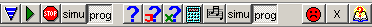
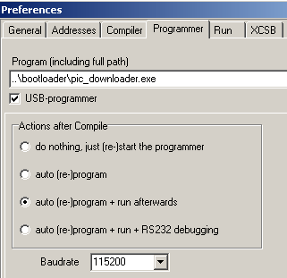
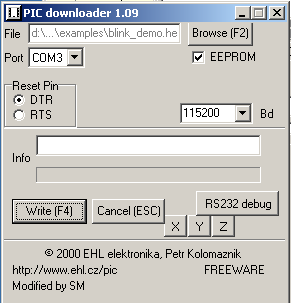
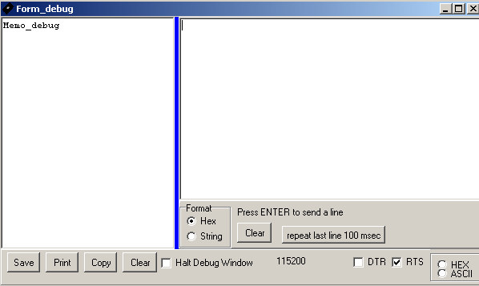

|
V todo released .... |
September 2004
Bootloader
With a bootloader you get
There's just one disadvantage, the PIC should be able to program itself (e.g. 16F87x), (also code-protection is limited).
JALcc can fully communicate with Shane Tolmies bootloader.
JALcc + Bootloader
Assuming the settings of JALcc and the bootloader are correctly set (see below), you're just a few steps away from running and debugging your JAL program:

| +programmer active
+programmer selected as output device
JALcc settings
|
Through the menu Edit / General Settings, you can reach the programmer settings.
Set path to the location of the bootloader.
Check the box USB-programmer (it's called that way, because this setting was first (and still is) used for an USB-programmer)
Select item 2,3 or 4 of the Actiosn after Compile. It really doesn't matter in this case, because always the fourth action will be executed.
Select the baudrate, at which you want to debug. (The bootloader alwasy communicates at 19.2 kBaud) |
 |
Bootloader settings
|
You have to do these settings once, because they will be remembered by the bootloader program.
Select the commport, only available (and free) commports will be shown. In case you use a USB device (e.g. FTDI chip), the commport will only be available after a valid USB communication is established (i.e. the USB device is connected to the PC).
Select the reset pin used by the bootloader.
Set EEPROM as desired.
Filename and baudrate don't need to be set, because they are set correctly by JALcc.
The other buttons are only needed, when the bootloader is used as standalone program. Buttons XYZ are just test buttons, for a databooter I'm developping. |
 |
Bootloader Debug window
The left window will display all the information received from the PIC. The information can be displayed in ASCII or in hex.
In the right window, you can type ASCII or hex characters, that will be sent to the PIC, after entering a Return.
There's a special repeat key, which will repeat sending the last line to the PIC, every 100 msec.
With the DTR or RTS button you're able to reset the PIC.

Commandline parameters
These parameters are only of interest, if you use the bootloader as a standalone device (without JALcc).
For version V2.0 and up
Start parameters
bootloader.exe <filename> - prog_run - <baudrate>
example
bootloader D:\JAL\test.hex - prog_run 115200
Note that the second and fourth parameter are not used for this bootloader, and therefor must be a minus-sign.
The third command parameter is fixed at "prog_run", maybe in the future other commands will be implemented.
For version upto V1.09 and Dx2xx-USB programmer:
Start parameters
bootloader.exe <filename> <commport> <resetpin> <baudrate>
example bootloader D:\JAL\test.hex COM3 DTR 115200
History
|
V todo released .... |
 new: read data-EEprom
new: read data-EEprom
 new: knop back to JALcc
new: knop back to JALcc
 new: Communication with JALcc has to be done for USB downloader
new: Communication with JALcc has to be done for USB downloader
 new:
new:
 new:
new:
|
V 2.0 released 25-09-2004 |
 new: RS232 version can now communicate with JALcc (USB-D2XX-version will folow)
new: RS232 version can now communicate with JALcc (USB-D2XX-version will folow)
 changed: The commandline parameters for the RS232 version has changed
changed: The commandline parameters for the RS232 version has changed
|
V 1.09 orginal release |
Changes compared to orginal Petr Kolomaznik
Downloads
Download RS232_version PIC_downloader.zip (310 kB)
Download USB_D2XX_version PIC_USB_downloader.zip (380 kB)
Background
Bootloader from Shane Tolmie
Program Microchip PIC micros with C - sample source code, FAQ and more
Based on downloader from Petr Kolomaznik